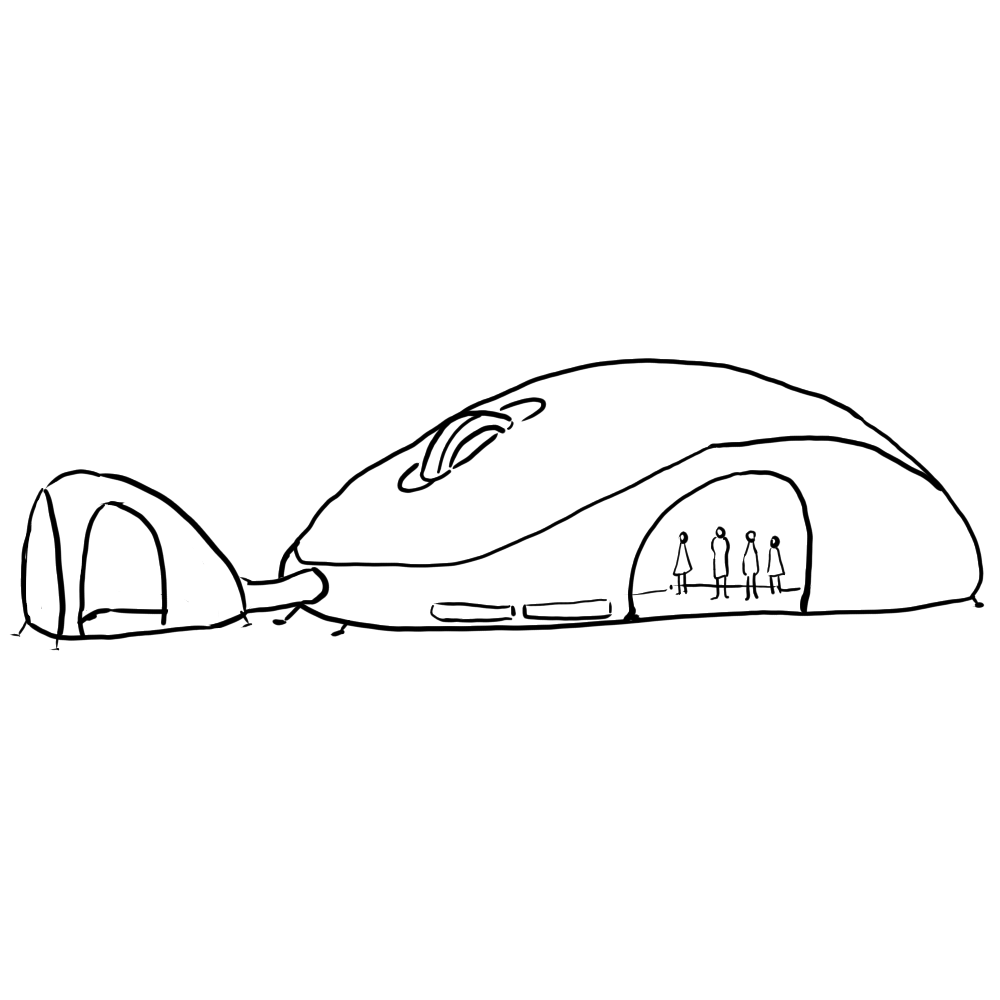
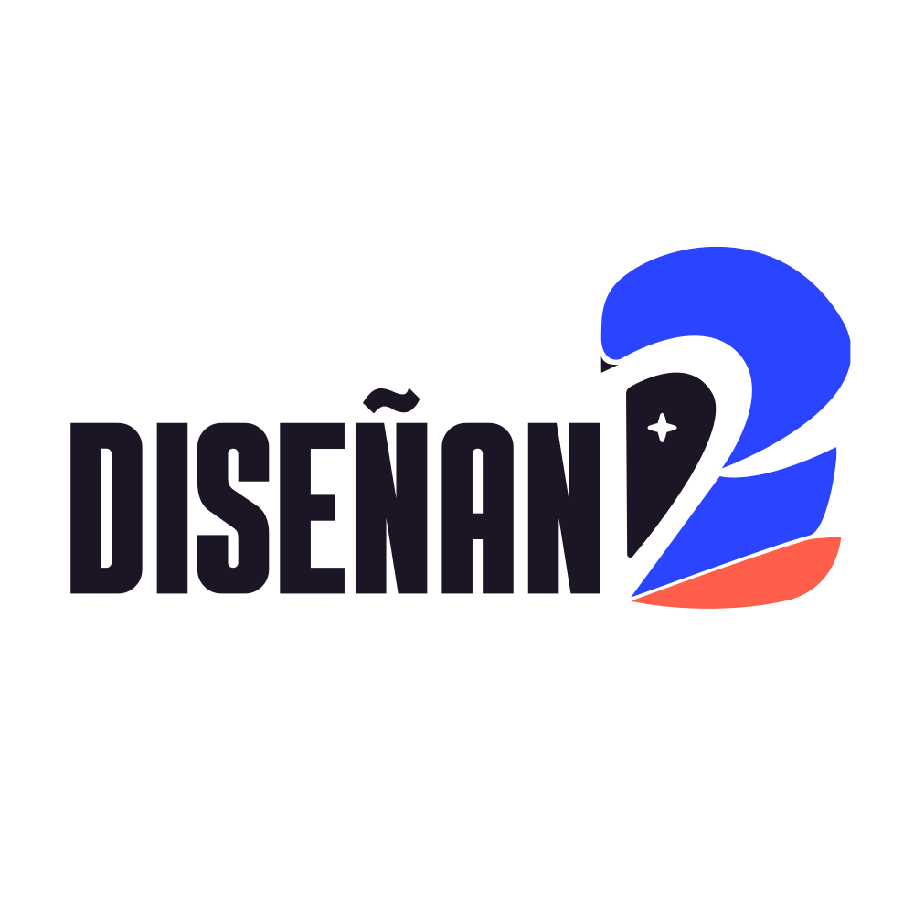

Tercer corte
Desarrollo
Desarrollo
Formal
Semana 12 — Primer acercamiento formal
Partimos de una propuesta sencilla y dinámica, inspirada en el diagrama de Voronoi, explorando formas orgánicas e irregulares que se alejaran de las geometrías convencionales. Sin embargo, esta primera aproximación todavía reflejaba nuestras limitaciones conceptuales y el conocimiento inicial sobre el desarrollo estructural del proyecto.


Esquema básico de la semana 12.
Semana 13 — Exploración y evolución formal


Semana 14
